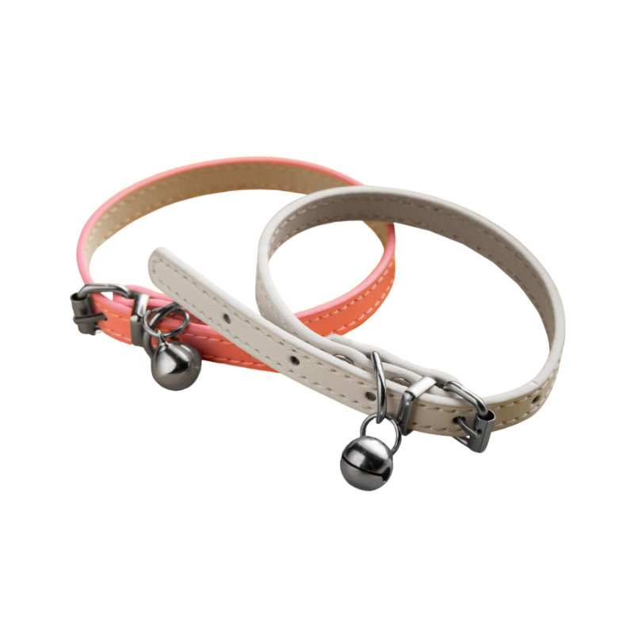
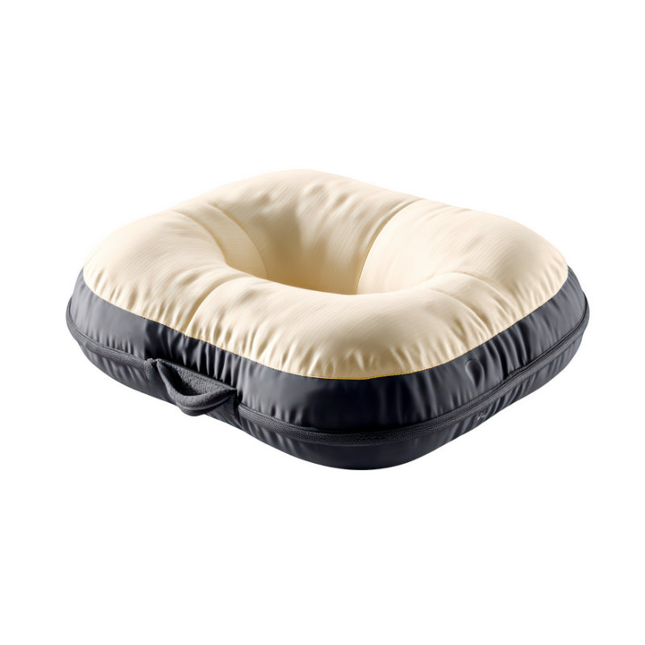
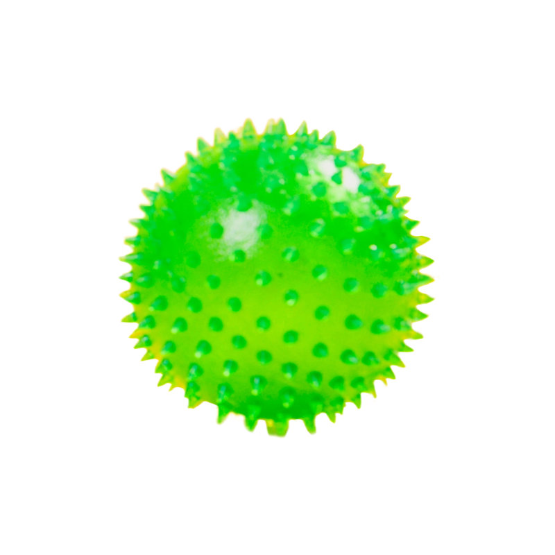
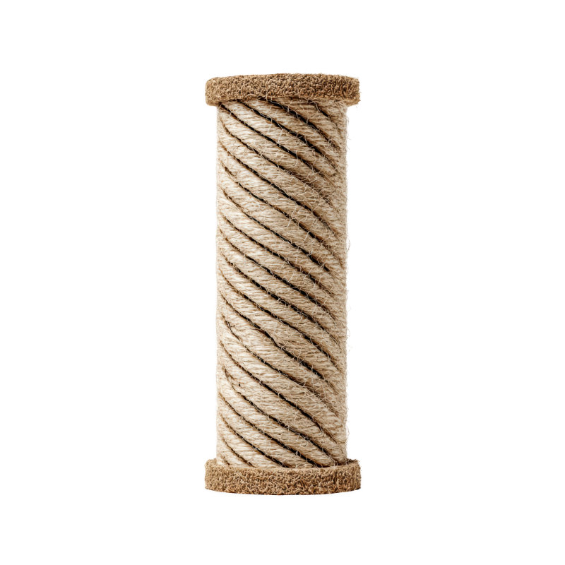

Coleira de Couro com Guizo

Coleira em couro sintético com 1 cm de largura e regulagem de 20 a 30 cm. Fivela e guizo em metal escovado. Cores: coral e bege.
Valor: R$ 44,90
Aqui você encontrará os melhores acessórios para o seu pet.
Arranhadores, bolinhas, camas e coleiras.

Coleira em couro sintético com 1 cm de largura e regulagem de 20 a 30 cm. Fivela e guizo em metal escovado. Cores: coral e bege.
Valor: R$ 44,90

Cama de 60×60 cm com enchimento em espuma e forro acolchoado. Base impermeável e antiderrapante. Cor: Bege com preto.
Valor: R$ 129,90

Borracha atóxica, 8 cm de diâmetro, cravos que massageiam a gengiva durante a brincadeira. Cor: Verde fluorescente.
Valor: R$ 19,90

Coluna de 40 cm revestida em corda de sisal, com base estável para manter seu gatinho ativo. Cor: Natural.
Valor: R$ 89,49